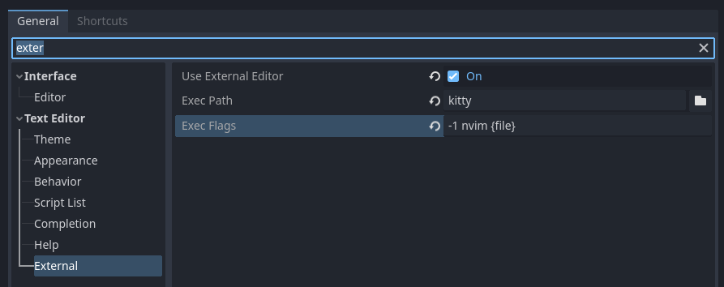
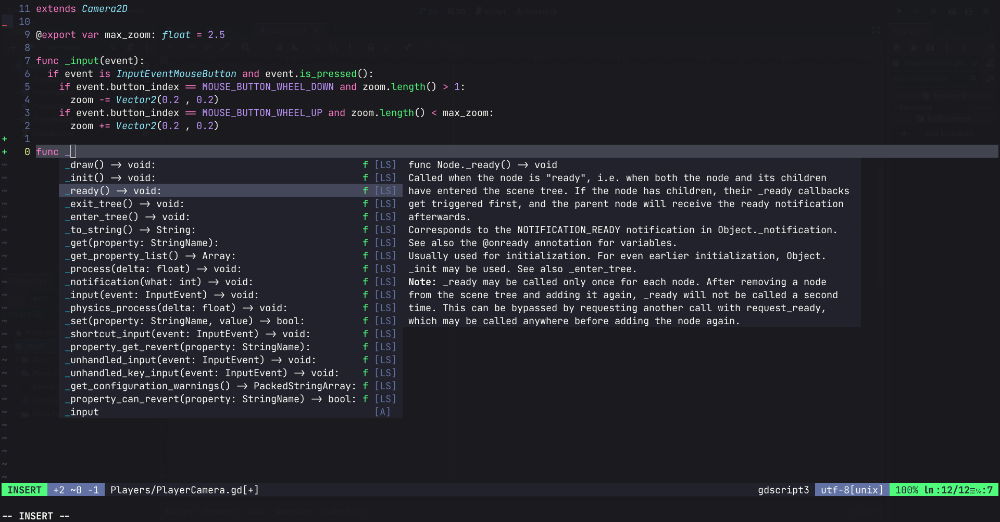

Recently I’ve been using Godot a bit to mess around with game development and I wanted to have autocompletion working with CoC. I looked around and there were no extensions for the Godot LSP. So, to use Godot with NeoVim I just had to connect to their LSP.
Setting Up
If you have CoC working correctly already, open NeoVim and run :CocConfig, it’ll open the configuration file for your CoC, then just add this to the JSON config:
"languageserver": {
"godot": {
"host": "127.0.0.1",
"filetypes": ["gdscript3"],
"port": 6005
}
}
Note: If there’s an error connecting to the LSP, open Godot and go on Editor > Editor Settings > Network > Language Server and check that the port numbers and IP address match.
Additional steps
You probably want syntax highlighting, for that you have 2 options: you could install the sheerun/vim-polyglot or use habamax/vim-godot (which provides syntax highlighting as well as a set of commands allows you to run scenes through NeoVim).
Setting up the editor
To set up the editor go to Editor > Editor Settings > Text Editor and change the Exec Path to the terminal of your liking (kitty in my case) and on Exec Flags put nvim {file}.

Now everything should be working correctly and when you click to open a script on the engine it should open nvim on the correct file.
